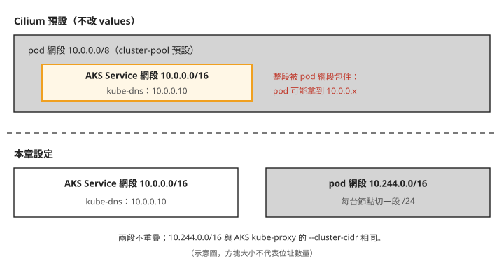
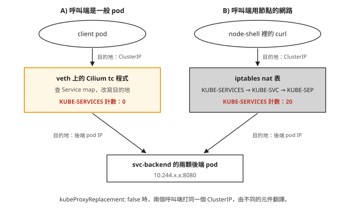
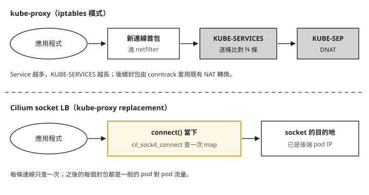

Day 7: 換掉資料平面——BYOCNI、Cilium 與 kube-proxy replacement¶

你想試 Cilium 的 L7 網路政策，也就是依應用層內容（例如 HTTP 方法與路徑）決定請求能不能通過的規則，順便把 kube-proxy 換掉。團隊裡有人提醒：「kube-proxy 現在負責 ClusterIP 的轉送，開了 kube-proxy replacement 才會換成 Cilium 接手，所以先別開，比較保守。」這句話聽起來很合理，要確認它對不對，得先有一座自己裝 Cilium 的叢集，再實際量一次：一個打到 ClusterIP 的請求，現在到底是誰把目的地改成後端 pod 的。
Day 0 到 Day 6 的工具都掛在 syscall 與 LSM 那一層，觀察行程做了什麼。這一章把 eBPF 放進網路路徑：建一座不帶網路外掛的 AKS 叢集，自己裝 Cilium，跑完連通性測試，再把 kube-proxy 換掉，比較換之前和換之後 Service 的位址翻譯走哪條路。
讀完之後，看到一座 Cilium 叢集裡的 ClusterIP 請求，你能判斷這次翻譯是 kube-proxy 的 iptables 做的，還是 Cilium 的 eBPF 做的；也會知道在 AKS 上拿掉 kube-proxy 之前要先補哪些設定，拿掉之後要清哪些東西。
為什麼要另開一座叢集¶
pod 一建立，就有自己的 IP，可以跟其他 pod 互通。這件事不是 kubelet 自己做的：kubelet 會呼叫一個 CNI（Container Network Interface）外掛，由它替 pod 配 IP、接好網路介面、設定路由。AKS 預設用的是 Azure 自己的 CNI，Cilium 則是另一套 CNI，用 eBPF 程式實作這些網路功能。
在 AKS 上用 Cilium 有兩條路：
- 受管的「Azure CNI powered by Cilium」：可以在既有叢集上開啟，但 Cilium 的 L7 政策與 Hubble UI（Hubble 是 Cilium 內建的流量觀測元件，Hubble UI 是它的網頁介面）要另外付費的附加元件，而這兩項正是 Day 8、Day 9 要學的部分。
- 自管的 BYOCNI（bring your own CNI）：建叢集時指定
--network-plugin none，AKS 不裝任何 CNI，由你自己裝。這個選項只能在建立叢集時決定，既有叢集轉換不了。
這一章走 BYOCNI。前六天的叢集上還裝著 Falco 與 Tetragon，換資料平面會影響它們，所以另外建一座叢集，Day 7 到 Day 9 都用這一座。
步驟 1: 建一座沒有網路的叢集¶
建叢集前，先確認要用的區域還有足夠的 vCPU 配額。<region> 換成你要建叢集的 Azure 區域，挑離你近、而且有 Standard_D2as_v5 這個機型的區域即可。下面輸出裡的 --query 篩選條件有省略，照打時可以先拿掉 --query，在完整列表裡找 Total Regional 開頭的兩列和你要用的 VM 家族那一列：
$ az vm list-usage -l <region> --query "[?...].{n:localName,c:currentValue,l:limit}" -o tsv
Total Regional Low-priority vCPUs 0 50 ← spot 配額整條沒人用
Total Regional vCPUs 16 200
Standard DASv5 Family vCPUs 0 50 ← 要看的是這一欄
Total Regional vCPUs 是整個訂閱在這個區域的總量（含其他資源），Standard DASv5 Family 才是這次要用的 VM 家族的額度。
接著建叢集。AKS 的第一個節點池一定是 system pool，而 system pool 不能是 spot，所以這裡是一台隨需節點。--priority 是 az aks nodepool add 的參數，步驟 2 再用它加入 spot 的 user pool。
az aks create -g <resource-group> -n <cluster> \
--location <region> --tier free \
--network-plugin none \
--nodepool-name system --node-count 1 --node-vm-size Standard_D2as_v5 \
--generate-ssh-keys
回傳的 JSON 裡，networkProfile.networkPlugin 是 none，serviceCidr 是 10.0.0.0/16，podCidr 是 null。podCidr 是 null，是因為 BYOCNI 之下 pod 的 IP 由你裝的 CNI 決定，AKS 不管。步驟 2 會回頭處理這一點。
接著在本機取得新叢集的憑證，另存 kubeconfig 並指定後續 kubectl 使用它。先把下列 placeholder 換成建立叢集時使用的 resource group、叢集名稱、訂閱 ID，以及獨立的 kubeconfig 檔案完整路徑；該路徑的目錄須已存在：
RG=<resource-group>
CLUSTER=<cluster>
SUB=<subscription-id>
KCFG="${KCFG:-<kubeconfig-path>}"
az aks get-credentials -g $RG -n $CLUSTER --subscription $SUB --file "$KCFG" --overwrite-existing
export KUBECONFIG="$KCFG"
kubectl config current-context
確認最後顯示的 context 對應剛建立的叢集，再執行後續指令。
沒有 CNI 的叢集長什麼樣子¶
叢集建好、還沒裝 CNI 的這段時間，可以看到少了 CNI 時壞的是哪一部分。第二個指令的 jsonpath 有省略，要看完整的節點條件，可以用 kubectl describe node <node> 的 Conditions 段：
在安裝 CNI 前，於本機依 Kubernetes v1.35 的 JSONPath 語法查詢每台節點的完整條件與 taint（依官方文件補上，本課沒有實跑）：
kubectl get nodes -o jsonpath='{range .items[*]}{.metadata.name}{"\n"}{range .status.conditions[*]}{.type}{"\t"}{.status}{"\t"}{.reason}{"\t"}{.message}{"\n"}{end}{end}'
kubectl get nodes -o jsonpath='{range .items[*]}{.metadata.name}{"\t"}{.spec.taints}{"\n"}{end}'
$ kubectl get nodes
NAME STATUS ROLES AGE VERSION
<node> NotReady <none> 2m14s v1.35.6
$ kubectl get node -o jsonpath='{range .status.conditions[*]}…'
Ready False KubeletNotReady
container runtime network not ready: NetworkReady=false
reason:NetworkPluginNotReady
message:Network plugin returns error: cni plugin not initialized
$ kubectl get node -o jsonpath='{.spec.taints}'
[{"effect":"NoSchedule","key":"node.kubernetes.io/not-ready"}]
節點 NotReady，但 kubelet 沒有壞。MemoryPressure、DiskPressure、PIDPressure 三個條件都正常，kubelet 有在回報、有在跑容器，唯一回報的問題是 cni plugin not initialized。Ready=False 一成立，Kubernetes 就替節點加上 node.kubernetes.io/not-ready:NoSchedule 這個 taint。
再看 pod，HOSTNET 欄是 pod 有沒有設 hostNetwork: true，也就是直接用節點的網路、不需要自己的 IP：
在本機依 Kubernetes v1.35 的 kubectl get 語法列出所有 namespace 的 pod 名稱、hostNetwork 設定與狀態（依官方文件補上，本課沒有實跑）：
kubectl get pods -A \
-o custom-columns='NAMESPACE:.metadata.namespace,NAME:.metadata.name,HOSTNET:.spec.hostNetwork,STATUS:.status.phase'
$ kubectl get pods -A -o custom-columns=NAME:…,HOSTNET:.spec.hostNetwork,STATUS:.status.phase
cloud-node-manager-cz2z9 true Running
csi-azuredisk-node-fr7dk true Running
kube-proxy-bxgkf true Running
konnectivity-agent-7fc6788985-jlh2t true Pending ← 注意這一顆
coredns-5d474ff6db-8qrgn <none> Pending
metrics-server-6f4547db5c-c9chh <none> Pending
用 hostNetwork 的系統元件在跑，需要自己 IP 的 CoreDNS、metrics-server 都在 Pending。不過 konnectivity-agent（AKS 讓 control plane 連回節點用的連線代理）也是 hostNetwork，卻一樣 Pending，所以決定能不能排上去的不只是 hostNetwork，原因見疑難排解：hostNetwork 的 pod 一樣 Pending。
CoreDNS 的排程事件是這樣寫的：
kubectl get nodes 明明列得出一台節點，scheduler 卻說沒有節點。它的意思是「沒有可以排的節點」，不會說明原因。在 BYOCNI 叢集上看到這行訊息，先檢查 CNI 裝了沒。
總結一下：沒有 CNI 時，control plane 和 API 都正常，kubectl 照常可用，壞掉的是「pod 有自己的 IP」這件事，而 CoreDNS 這類需要 pod 網路的元件都排不上去。
步驟 2: 裝 Cilium¶
再加一台 spot 節點¶
後面的連通性測試和 Service 實驗需要兩台節點。第二台放在 spot 的 user pool（spot 參數只有 az aks nodepool add 有）：
az aks nodepool add -g <resource-group> --cluster-name <cluster> -n spotpool \
--node-count 1 --node-vm-size Standard_D2as_v5 \
--priority Spot --eviction-policy Delete --spot-max-price -1
AKS 會替 spot 節點加上 kubernetes.azure.com/scalesetpriority=spot:NoSchedule 這個 taint，要排到這台節點上的 pod 都得帶對應的 toleration。這個 taint 由 AKS 管理，不能自行移除；使用第三方 chart 或測試工具之前，也要確認它們能替 pod 設定 toleration。步驟 3 會遇到它造成的問題。
pod 網段與 Service 網段¶
寫 Cilium 的設定之前，要先分清楚叢集裡的兩段位址：
- Service 網段（service CIDR）：ClusterIP 從這裡配。這座叢集是
10.0.0.0/16，CoreDNS 的 Service（kube-dns）固定在10.0.0.10。 - pod 網段（pod CIDR）：pod IP 從這裡配。BYOCNI 之下由 CNI 決定，Cilium 預設的配發方式（cluster-pool IPAM，由 cilium-operator 替每台節點切一小段）從
10.0.0.0/8裡分配。
問題就在這裡：10.0.0.0/8 整個包住了 10.0.0.0/16。不改設定，pod 可能拿到 10.0.0.x 的位址，跟 kube-dns 的 ClusterIP 落在同一段。

兩段重疊時，同一個位址可能同時是一個 Service 和一顆 pod。Cilium 收到往 10.0.0.10 的封包時，會把它當成本節點上的 pod，而不是 kube-dns。aksbyocni 預設組合不會替你調整網段，所以要在安裝前指定不重疊的 pod 網段。每台節點分到的網段會記在 CiliumNode 物件裡；安裝後才改，單靠 helm upgrade 不會重新配發，已取得舊網段 IP 的 pod 也需要重建。
這裡採用 kube-proxy 啟動參數記載的網段。AKS 預設的 kube-proxy 啟動參數裡寫著 pod 網段：
在修改 kube-proxy DaemonSet 前，於本機依 Kubernetes v1.35 的 JSONPath 語法列出各容器的 command 與 args，查找 --cluster-cidr（依官方文件補上，本課沒有實跑）：
kubectl -n kube-system get ds kube-proxy \
-o jsonpath='{range .spec.template.spec.containers[*]}{.name}{"\ncommand: "}{.command}{"\nargs: "}{.args}{"\n"}{end}'
$ kubectl -n kube-system get ds kube-proxy -o jsonpath='{…containers[0].command}'
["kube-proxy", …, "--cluster-cidr=10.244.0.0/16", …]
az aks show 回報的 podCidr 是 null，但 kube-proxy 一直假設 pod 在 10.244.0.0/16。BYOCNI 只是把配發 pod IP 的工作交給你，叢集裡其他元件對 pod 網段仍然有自己的假設，所以 Cilium 也用這一段。
用 Helm 安裝，版本寫死¶
安裝方式選 Helm，把 Cilium 版本固定在指令裡，避免安裝結果隨工具的預設版本改變。cilium-cli 還是要裝，只用來診斷：cilium status 和 cilium connectivity test 這兩件事 Helm 做不到。
cilium-operator 預設有 2 個副本，podAntiAffinity 會避免它們排到同一台節點。本章的小型叢集將副本數設為 1，寫在安裝前的 values 裡。
cat > cilium-values.yaml <<'EOF'
aksbyocni:
enabled: true
nodeinit:
enabled: true
ipam:
mode: cluster-pool
operator:
clusterPoolIPv4PodCIDRList: ["10.244.0.0/16"]
clusterPoolIPv4MaskSize: 24
kubeProxyReplacement: false # turned on in step 4, deliberately not yet
operator:
replicas: 1
EOF
helm repo add cilium https://helm.cilium.io/ && helm repo update cilium
helm install cilium cilium/cilium --version 1.20.0 -n kube-system -f cilium-values.yaml
kubeProxyReplacement: false 是刻意的：先讓 Cilium 跟 kube-proxy 並存，步驟 4 才比較得出換掉前後的差別。
裝出來的是三個 DaemonSet 加一個 Deployment。表裡的 endpoint 是 Cilium 管理的工作負載網路端點，用來套用網路設定與政策；CNI conflist 則是 CNI 外掛設定清單，讓容器執行環境知道建立 pod 網路時要使用哪些外掛與設定：
| 元件 | 形狀 | 做什麼 |
|---|---|---|
cilium（agent） |
DaemonSet，每節點 1 | 掛載 eBPF 程式、管 endpoint、寫 CNI conflist |
cilium-envoy |
DaemonSet，每節點 1 | L7 政策的執行體（Day 8 的 HTTP 規則要靠它） |
cilium-node-init |
DaemonSet，每節點 1 | 節點層前置，跑完就 sleep（實測 1m CPU / 0Mi） |
cilium-operator |
Deployment | 叢集層：IPAM 配發 pod CIDR、回收不再使用的身分（identity，Cilium 依 pod 標籤配給的編號，Day 8 會用到） |
cilium-envoy 從 1.16 起預設獨立成一個 DaemonSet，以前是塞在 agent 裡。另外還裝了 10 個 CRD，Day 8 要用的 CiliumNetworkPolicy 是其中之一。
跟 Falco、Tetragon 不同的兩個設定¶
Cilium agent 的 chart 預設掛 system-node-critical，跟 kube-proxy 同級；Falco 與 Tetragon 的 priority 都是 0（見 Day 3 的「Falco pod 被搶佔，DaemonSet 卻顯示全部就緒」）。Cilium 是節點的網路本身，被搶占的後果是整台節點斷網，所以這個設定合理。另一個差別是 QoS：agent 容器跟 Tetragon 一樣沒設 resources，Cilium 卻是 Burstable，原因見疑難排解：cilium pod 的 request 只有 10Mi。
步驟 3: 連通性測試¶
先確認四個元件都起來了：
$ cilium status --wait
/¯¯\__/¯¯\ Cilium: OK
\__/¯¯\__/ Operator: OK
/¯¯\__/¯¯\ Envoy DaemonSet: OK
\__/¯¯\__/ Hubble Relay: disabled ← Day 9 才開
cilium connectivity test 會建一組測試用的 namespace 與 pod，實際發出各種流量（pod 對 pod、pod 對 Service、跨節點、套政策之後該通的和不該通的），檢查結果是否符合預期。整組大約要跑 23 分鐘。測試 pod 要能排到 spot 節點上，所以帶 --tolerations：
$ cilium connectivity test --tolerations kubernetes.azure.com/scalesetpriority \
--test-namespace cilium-test-kp
📋 Test Report
❌ 2/82 tests failed (0/672 actions), 50 tests skipped, 1 scenarios skipped
最後一行看起來像是有兩件事壞了。拆開來讀：
- 每一項測試由好幾個 action 組成，一個 action 是一次實際發出的連線或一次政策判定。672 個 action 失敗數是 0。
- 132 項裡 50 項被跳過，原因有三類：功能沒開（加密、Egress Gateway 等，本章都沒開）、會改動節點狀態（CLI 預設不跑）、版本條件（舊版加密測試已被 v2 取代）。
- 實際跑的 82 項裡，80 項通過。
失敗的兩項是 pod-to-pod-encryption-v2 和 node-to-node-encryption。它們沒有任何一個 action 失敗，失敗在測試框架的探針 pod 排不上 spot 節點，見疑難排解：兩項測試找不到 host namespace pod。spot 的 taint 由 AKS 管理，不能自行移除，所以在有 spot 節點池的 AKS 叢集上，這兩項跑不起來。它們測的是加密，這座叢集沒開加密。步驟 5 的第二輪測試會明確排除這兩項，排除的原因就是這裡寫的這些。
所以這一輪的結果是：資料平面的功能都正常，兩項失敗可以歸因到測試框架與 spot 節點。
步驟 4: 換掉 kube-proxy¶
cilium status 會顯示 KubeProxyReplacement: False，kube-proxy 的兩顆 pod 也都在跑。照開場那句話，現在 ClusterIP 是 kube-proxy 在處理。這一步先實際量一次，再換。
kube-proxy 怎麼實作 ClusterIP¶
ClusterIP 是一個虛擬位址，沒有任何網路介面真的擁有它。封包要送到 ClusterIP，途中得有人把目的地改成某一顆後端 pod 的 IP，這個動作叫 DNAT（destination NAT，改寫目的位址）。
kube-proxy 是每台節點上跑一份的程式，監看 Service 與它的後端 pod，把對應的 DNAT 規則寫進節點的 iptables nat 表。iptables 是 Linux 核心封包處理框架 netfilter 的規則工具，只有新連線的第一個封包會逐條比對 nat 表規則；同一條連線的後續封包套用已記錄的轉換。
準備兩個觀察位置¶
要看節點上的 iptables，需要一顆 hostNetwork: true 加 privileged 的 pod。少了 hostNetwork，iptables -t nat -S 會回一份空的規則表：那不是沒有規則，而是你看到的是容器自己的網路命名空間（network namespace，每個容器各自一份的網路設定）。這顆 pod 跟 Day 2–6 的節點 pod 形狀相同，多加了 hostNetwork：
cat > node-shell.yaml <<'EOF'
apiVersion: apps/v1
kind: DaemonSet
metadata:
name: node-shell
namespace: netlab
spec:
selector:
matchLabels: {app: node-shell}
template:
metadata:
labels: {app: node-shell}
spec:
hostPID: true
hostNetwork: true
dnsPolicy: ClusterFirstWithHostNet
tolerations:
- operator: Exists
containers:
- name: shell
image: ubuntu:24.04
command: ["sleep", "infinity"]
securityContext:
privileged: true
volumeMounts:
- {name: hostroot, mountPath: /host}
volumes:
- name: hostroot
hostPath: {path: /}
EOF
被測的服務是一個 ClusterIP Service，後面兩顆後端（只有一顆的話，iptables 裡看不出挑後端的那段規則），再加一顆當呼叫端的裸 Pod client：
cat > svc-lab.yaml <<'EOF'
apiVersion: v1
kind: Namespace
metadata:
name: netlab
---
apiVersion: apps/v1
kind: Deployment
metadata:
name: svc-backend
namespace: netlab
spec:
replicas: 2
selector:
matchLabels: {app: svc-backend}
template:
metadata:
labels: {app: svc-backend}
spec:
topologySpreadConstraints:
- maxSkew: 1
topologyKey: kubernetes.io/hostname
whenUnsatisfiable: ScheduleAnyway
labelSelector:
matchLabels: {app: svc-backend}
containers:
- name: web
image: hashicorp/http-echo:1.0
args: ["-listen=:8080", "-text=OK"]
ports: [{containerPort: 8080}]
---
apiVersion: v1
kind: Service
metadata:
name: svc-backend
namespace: netlab
spec:
selector: {app: svc-backend}
ports:
- port: 80
targetPort: 8080
---
apiVersion: v1
kind: Pod
metadata:
name: client
namespace: netlab
labels: {app: client}
spec:
containers:
- name: c
image: nicolaka/netshoot:v0.13
command: ["sleep", "infinity"]
EOF
kubectl apply -f svc-lab.yaml
kubectl apply -f node-shell.yaml
接下來的觀察要用三個值：client 在哪台節點、跟它同一台節點的 node-shell pod 名稱、這個 Service 的 ClusterIP（下文的 <cluster-ip>）：
kubectl -n netlab get pods -o wide
kubectl -n netlab get svc svc-backend
kubectl -n netlab exec -it <node-shell-pod> -- bash
第一個指令的 NODE 欄會列出每顆 pod 所在的節點，挑跟 client 同一台的那顆 node-shell 進去，因為等一下要讀的是 client 那台節點上的計數器。
node-shell 用的 ubuntu:24.04 映像沒有 iptables、curl、bpftool。驗證時是在 node-shell 裡用 nsenter -t 1 -m -p -- <指令> 借用節點本身的工具與檔案系統（-t 1 指節點的 PID 1，-m -p 進它的掛載與行程命名空間），例如 nsenter -t 1 -m -p -- iptables -t nat -S；/run/cilium/cgroupv2 這類路徑也要這樣才看得到節點上的那一份，直接在容器裡看要改成 /host 底下。下面的輸出沒有寫出這段前綴。節點上如果沒有 bpftool，要自己準備，本課沒有記錄安裝方式。另外，輸出裡的 kubectl exec client 都省略了 -n netlab，照打時要加上。
先看 kube-proxy 寫了什麼¶
在 node-shell 裡，從 nat 表的入口一路追到這個 ClusterIP 的後端：
$ iptables -t nat -S PREROUTING
-A PREROUTING -m comment --comment "cilium-feeder: CILIUM_PRE_nat" -j CILIUM_PRE_nat
-A PREROUTING -m comment --comment "kubernetes service portals" -j KUBE-SERVICES
$ iptables -t nat -S | grep <cluster-ip>
-A KUBE-SERVICES -d <cluster-ip>/32 -p tcp --dport 80 -j KUBE-SVC-XS3ZU56555AQFGIC
$ iptables -t nat -S KUBE-SVC-XS3ZU56555AQFGIC
-A KUBE-SVC-… -m statistic --mode random --probability 0.50000000000 -j KUBE-SEP-JZF7FF4KHPDVC7PP
-A KUBE-SVC-… -j KUBE-SEP-A6QIQCODODBCXNWL
$ iptables -t nat -S KUBE-SEP-JZF7FF4KHPDVC7PP
-A KUBE-SEP-… -p tcp -j DNAT --to-destination 10.244.1.202:8080
照四段輸出的順序讀，就是 kube-proxy 的 iptables 模式處理新連線首包的路徑：
- 封包進入 nat 表的
PREROUTING，跳到KUBE-SERVICES。 KUBE-SERVICES是一條線性的鏈，每個 Service 一條規則，從頭逐條比對，比中這個 ClusterIP 就跳進它的KUBE-SVC-*。KUBE-SVC-*用statistic --mode random --probability挑後端：兩顆後端時，第一條 0.5，沒中就落到第二條。三顆會是 0.333、0.5、1，因為每一條算的是「前面都沒中」之後的機率。- 在選中的
KUBE-SEP-*做 DNAT，目的地改成後端 pod 的10.244.1.202:8080。
另外要注意第一段的第一行：CILIUM_PRE_nat 排在 KUBE-SERVICES 前面，Cilium 也在 nat 表裡。這時候 cilium service list 一樣列得出這個 Service，iptables 有規則，Cilium 也有自己的 map，兩邊都「有」這筆資料。有資料不代表真的被用到。
誰真的做了那次翻譯¶
要知道封包實際走哪條路，看 iptables 的封包計數器：先清零，從呼叫端打固定次數，再讀計數。呼叫端分兩種，一般 pod 和節點本身（hostNetwork）：
完成下方 A 組的計數器清零後，在本機另一個終端機依 Kubernetes v1.35 的 kubectl get 與 kubectl exec 語法查出 ClusterIP，讓 netlab 的 client 發出 20 次請求，再回 node-shell 讀取計數器（依官方文件補上，本課沒有實跑）：
SVC_IP=$(kubectl -n netlab get svc svc-backend -o jsonpath='{.spec.clusterIP}')
kubectl -n netlab exec client -- sh -c \
'for i in $(seq 1 20); do curl -s -o /dev/null -w "%{http_code}\n" "http://$1/"; done' \
sh "$SVC_IP"
### A) 呼叫端 = 一般 pod
$ iptables -t nat -Z ← 全表計數器清零
$ kubectl exec client -- sh -c 'for i in $(seq 1 20); do curl -s -o /dev/null -w "%{http_code}" http://<cluster-ip>/; done'
200200200200200200200200200200200200200200200200200200200200
$ iptables -t nat -L KUBE-SERVICES -n -v | grep <cluster-ip>
0 0 KUBE-SVC-XS3ZU56555AQFGIC tcp -- 0.0.0.0/0 <cluster-ip> tcp dpt:80
↑ 20 次請求全部成功,iptables 一個封包都沒看到
### B) 呼叫端 = hostNetwork(節點 root netns)
$ iptables -t nat -Z
$ (在 node-shell 裡) for i in $(seq 1 20); do curl -s -o /dev/null -w "%{http_code}" http://<cluster-ip>/; done
200200200200200200200200200200200200200200200200200200200200
$ iptables -t nat -L KUBE-SERVICES -n -v | grep <cluster-ip>
20 1200 KUBE-SVC-XS3ZU56555AQFGIC tcp -- 0.0.0.0/0 <cluster-ip> tcp dpt:80
$ iptables -t nat -L KUBE-SVC-XS3ZU56555AQFGIC -n -v
10 600 KUBE-SEP-JZF7FF4KHPDVC7PP … probability 0.50000000000
10 600 KUBE-SEP-A6QIQCODODBCXNWL
同一個 ClusterIP、同一台節點，兩個呼叫端都拿到 20 次 200，計數器卻一個是 0、一個是 20；hostNetwork 那組的兩個後端各計數十次。一般 pod 發出的請求完全沒經過 kube-proxy 的規則。
原因在 Cilium agent 的詳細狀態裡。cilium-dbg 是 agent 容器裡的診斷工具，要在 agent pod 裡執行：
ds/cilium 會挑其中一顆 agent pod；想看特定節點，就把它換成那台節點上的 cilium pod 名稱。輸出裡跟 kube-proxy replacement 有關的段落：
KubeProxyReplacement: False
KubeProxyReplacement Details:
Status: False
Socket LB: Disabled
Services:
- ClusterIP: Enabled ← 就是這一行
- NodePort: Disabled
- LoadBalancer: Disabled
- externalIPs: Disabled
- HostPort: Disabled
kubeProxyReplacement: false 關掉的是 NodePort、LoadBalancer、externalIPs、HostPort 和 socket LB（在行程建立連線時就改寫目的地的做法，步驟 5 細看），ClusterIP 一直是開著的。
ClusterIP 由誰處理，要看封包經過哪裡。每顆 pod 都靠一對 veth 連到節點：veth 是成對的虛擬網路介面，一端在 pod 的網路命名空間裡，另一端在節點上，pod 送出的每個封包都會經過它。
Cilium 在每對 veth 的節點端掛了 tc 程式，也就是 Day 0 講過的 tc 掛載點。封包一離開 pod，這支程式就去查 Cilium 存放 Service 與後端對應的 map，把目的地改成後端 pod IP。封包到達節點的 iptables 時，目的地已經不是 ClusterIP，KUBE-SERVICES 比對不到。

照著圖看兩條路：左邊的封包從 pod 出來就先碰到 veth 上的 tc 程式，右邊的行程本來就在節點的網路命名空間裡，沒有 veth 可經過，只能交給 iptables。所以在一座還沒開 replacement 的 Cilium 叢集上，kube-proxy 實際負責的只有節點自己發起的流量（hostNetwork pod、節點上的服務、kubelet），以及 NodePort 這幾類入口。
回到開場那句話：「先不開 replacement 比較保守」，保守的範圍其實只有上面這些流量。另外，拿 iptables 規則數當作 kube-proxy 的負載指標也會誤判，一般 pod 的 Service 流量不會經過那些規則。
換掉它¶
kube-proxy 一拿掉，kubernetes 這個 Service（10.0.0.1:443，pod 用來連 API server 的位址）就沒人翻譯了；而 cilium-agent 自己也要連 API server，才知道叢集裡有哪些 Service 要翻譯。為了避開這個循環，要在 values 裡直接告訴 agent API server 的真實位址。AKS 的 API server 位址可以這樣查：
順序也要注意：先讓 Cilium 接手，再拆 kube-proxy。反過來做，中間那段時間 hostNetwork 的流量沒有人翻譯，而 cilium-agent 重啟時用的正是 hostNetwork。
# The two k8sService* lines are NOT optional. Once kube-proxy is gone, nobody
# translates the `kubernetes` Service (10.0.0.1:443) — and cilium-agent needs the
# API server to learn what Services exist. Give it the control plane's real FQDN
# to break that circular dependency.
cat >> cilium-values.yaml <<'EOF'
kubeProxyReplacement: true
k8sServiceHost: <api-server-fqdn>
k8sServicePort: "443"
EOF
helm upgrade cilium cilium/cilium --version 1.20.0 -n kube-system -f cilium-values.yaml --wait
kubectl -n kube-system rollout restart ds/cilium
漏掉 k8sServiceHost、k8sServicePort 那兩行，helm 不會回報錯誤，結果是 agent 進 CrashLoopBackOff，整座叢集的 Service 一起停擺。
agent 重啟後，再看一次詳細狀態：
KubeProxyReplacement Details:
Status: True
Socket LB: Enabled ← 從 Disabled 變成 Enabled
Services:
- ClusterIP: Enabled
- NodePort: Enabled (Range: 30000-32767) ← 這四項才是 replacement 真正帶來的
- LoadBalancer: Enabled
- externalIPs: Enabled
- HostPort: Enabled
跟前一份對照，ClusterIP 本來就是 Enabled，多出來的是 NodePort、LoadBalancer、externalIPs、HostPort，以及 Socket LB。開了 socket LB，翻譯不再等封包經過 veth，而是在行程呼叫 connect() 建立連線時就把目的地改成後端 pod，步驟 5 會看它掛在哪裡。
拿掉 kube-proxy，再清掉它留下的規則¶
AKS 的 kube-proxy 是受管附加元件，刪除 DaemonSet 後，控制面會重新建立它。Cilium 官方給受管叢集的做法，是把 DaemonSet 的 nodeSelector 改成一個沒有任何節點帶著的標籤，讓它排不到任何節點。標籤名稱可以自己取：
$ kubectl -n kube-system patch daemonset kube-proxy \
-p '{"spec":{"template":{"spec":{"nodeSelector":{"lab.local/no-kube-proxy":"true"}}}}}'
驗證時觀察了 125 秒，控制面沒有把這個 patch 改回去，經過步驟 6 的一次停機重啟後也還在；更長時間會不會被改回，沒有觀察到。DaemonSet 物件本身還在、而且刪不掉，但叢集裡沒有 kube-proxy pod。AKS 另外有一個原生的關法（az aks update --kube-proxy-config），要先在訂閱層級註冊預覽功能 KubeProxyConfigurationPreview，這一章用的是上面的 nodeSelector patch。
kube-proxy 的 pod 不在了，它寫進 iptables 的規則還留在節點上，要在每一台節點的 node-shell 裡自己清（見疑難排解：nat 表還有 120 條 KUBE-*）：
步驟 5: 量化——規則數、查找路徑與延遲¶
規則數¶
叢集裡有 10 個 Service，換掉 kube-proxy 並清完規則後，比較 nat 表：
| nat 表總行數 | 其中 KUBE-* |
其中 CILIUM_* |
Service 相關規則 | |
|---|---|---|---|---|
| kube-proxy 在 | 135 | 120 | 11 | 120 |
| replacement 之後 | 16 | 1（KUBE-KUBELET-CANARY，kubelet 的空鏈） |
11 | 0 |
10 個 Service 對應 120 條 nat 規則，而且會線性成長：每多一個 Service，KUBE-SERVICES 多一條要逐條比對的規則；每多一顆後端，那個 Service 的鏈多一條。剩下的 11 條 CILIUM_* 裡，3 條是 Cilium 自己的鏈的宣告，3 條是從 nat 表入口跳進這些鏈，其餘 5 條在 CILIUM_POST_nat 裡改寫來源位址：pod 往 pod 網段以外連線時換成節點位址（MASQUERADE），以及往 cilium_host 介面的流量改用 cilium_host 的位址（SNAT）。這 11 條都跟 Service 查找無關，也不隨 Service 數量增加。
查找路徑¶
規則數變少只是結果，翻譯發生的位置也變了。在 node-shell 裡列出 Cilium 掛在 cgroup 上的程式：
$ bpftool cgroup show /run/cilium/cgroupv2
ID AttachType Name
4706 cgroup_inet4_connect cil_sock4_connect ← 就是這一支
cil_sock4_connect 掛在 cgroup_inet4_connect，也就是 Day 0 講過的 cgroup 掛載點裡的一種：行程呼叫 connect(2) 的那一刻就會觸發，這時候還沒有任何封包被組出來。程式查 Service map，直接把這個 socket 的目的地改成後端 pod 的位址。這就是步驟 4 輸出裡的 socket LB。應用程式以為自己連的是 ClusterIP，之後這條連線的每個封包都是一般的 pod 對 pod 流量。

把兩條路整理成表：
| kube-proxy（iptables 模式） | Cilium kube-proxy replacement | |
|---|---|---|
| 發生時機 | 新連線首包，在 netfilter hook 查 nat 規則 | 每條連線一次，在 connect() |
| 資料結構 | 線性規則鏈，O(Service 數) 比對 |
eBPF hash map，O(1) 查找 |
| 後端選擇 | 依規則中的機率選擇 | map 的 slot 索引 |
| 之後每個封包 | 走 conntrack 查 NAT 狀態 | 不需要，位址已經是真的 |
表裡的 conntrack 是核心的連線追蹤表：iptables 對一條連線的第一個封包做完 DNAT 後，把結果記在這裡，同一條連線後續的封包查這張表套用同樣的改寫。
因此，逐條查找 nat 規則的成本發生在新連線首包，不能算成每個封包都重新查找。這也符合 Netfilter 官方的 NAT 說明。
延遲：量了，但不能宣稱改善¶
在 node-shell 裡對同一個 ClusterIP 量 curl 的 time_connect（只含 TCP 三次握手），每組 300 次：
| 量測 | mean | p50 | p90 | p99 |
|---|---|---|---|---|
| kube-proxy（iptables） | 0.370 ms | 0.305 | 0.515 | 1.600 |
| replacement 之後 run1 | 0.311 ms | 0.257 | 0.378 | 0.937 |
| replacement 之後 run2 | 0.250 ms | 0.221 | 0.332 | 0.617 |
| 對照組：直接打後端 pod IP | 0.249 ms | 0.220 | 0.334 | 0.727 |
只看第一列和第三列，會想說快了 27%（p50 差 84 µs），但這個結論有兩個問題。第一，kube-proxy 那一組是在連通性測試同時執行時量的，負載跟後兩組不同。第二，replacement 之後的兩輪彼此就差了 36 µs（p50 0.257 對 0.221），兩次量測之間的波動跟想宣稱的差距在同一個量級。兩者加起來，這張表不能拿來說誰比較快；要回答這個問題，需要固定負載、交錯取樣的比較。
同一張表倒是能支持另一個結論：走 ClusterIP（run2 的 p50 0.221）和直接打後端 pod IP（p50 0.220）在量測精度內一樣。對照組完全沒有 Service 翻譯，socket LB 那一組多查了一次 map，多出來的成本量不到。至於 iptables 線性鏈的代價，在只有 10 個 Service 的叢集上還不明顯，要到幾百、上千個 Service 才會變成看得出來的數字。這一章的延遲量測沒有做到固定負載，也沒有到那個規模，所以只拿來支持上面這個結論。
第二輪連通性測試¶
replacement 之後重跑一次，用 --test '!名稱' 排除步驟 3 那兩項跑不起來的加密測試：
cilium connectivity test --tolerations kubernetes.azure.com/scalesetpriority \
--test '!pod-to-pod-encryption-v2' --test '!node-to-node-encryption' \
--test-namespace cilium-test-kpr
action 總數從 672 變成 678，多出來的 6 個跟 NodePort 有關：replacement 開啟後 NodePort: Enabled，測試框架多跑了幾條先前被跳過的路徑。
確認 kube-proxy 不在、Service 還通¶
最後逐項確認：kube-proxy 沒有 pod、節點上沒有行程、agent 自己回報 replacement 已開啟，從 pod、從節點、到 kubernetes Service 都還連得到。跟前面一樣，nsenter 在 node-shell 裡執行，kubectl exec client 要加 -n netlab，cilium-dbg 在 agent pod 裡執行：
$ kubectl -n kube-system get ds kube-proxy
NAME DESIRED CURRENT READY NODE SELECTOR
kube-proxy 0 0 0 lab.local/no-kube-proxy=true
$ kubectl get pods -A | grep -c kube-proxy → 0
$ (兩顆節點) nsenter -t 1 -m -p -- pgrep -a kube-proxy → (no kube-proxy process)
$ cilium-dbg status | grep KubeProxyReplacement → True
$ kubectl exec client -- curl http://svc-backend…/ → 200
$ (node-shell, hostNetwork) curl http://<cluster-ip>/ → 200
$ kubectl exec client -- curl -k https://10.0.0.1:443/healthz → 401
最後那個 401 是正常結果：TLS 握手完成、HTTP 請求送到了 API server，只是沒帶憑證。kubernetes Service 是換掉 kube-proxy 時最容易壞的路徑，它是通的。
步驟 6: 停機後再開機，確認一切還在¶
不用的時候要把節點停下來。AKS 的 system pool 至少要保留一台，不能縮到 0；spot 的 user pool 可以。BYOCNI 叢集要讓所有節點停下，用 az aks stop 停掉整座叢集。
這帶出一個問題：Cilium 是自己裝的，停機再開機之後，CNI 會不會自己回來？spot 節點池先縮到 0，再停機、開機，看結果：
Azure CLI 原紀錄未記版號，以下沿用保存腳本的參數，並以官方文件核對語法。
在本機沿用步驟 1 的 RG、CLUSTER、SUB，依序將 spot 節點池縮到 0、停機與開機（依官方文件補上，本課沒有實跑）：
az aks nodepool scale -g "$RG" --cluster-name "$CLUSTER" \
-n spotpool --node-count 0 --subscription "$SUB"
az aks stop -g "$RG" -n "$CLUSTER" --subscription "$SUB"
az aks start -g "$RG" -n "$CLUSTER" --subscription "$SUB"
$ az aks stop …
$ az aks start …
$ kubectl get nodes
<node>-vmss000001 Ready <none> 90s v1.35.6
↑ 注意編號變了:這是一台全新的 VM,不是原來那台
節點名稱的編號從 000000 變成 000001：az aks start 給的是一台新的 VM，不是把原來那台叫醒。所以問題其實是「新節點上的 Cilium 會不會自己裝好」，答案是會：
- Cilium 的四個元件都是 DaemonSet 或 Deployment，新節點一加入就自己排上去、寫好 CNI 設定，不用重裝。
- kube-proxy 的 nodeSelector patch 還在，叢集裡仍然沒有 kube-proxy pod，
KubeProxyReplacement仍是True，Service 照樣可達。 - 新節點從來沒跑過 kube-proxy，nat 表一開始就只有 16 行，不需要再清一次。
- 裸 Pod 不會回來。
client沒有任何控制器管它，跟著舊 VM 一起消失；要再用它，重新kubectl apply -f svc-lab.yaml。
這個停機、開機循環驗證時只跑過一次，kube-proxy 的 patch 撐過了那一次，一次觀察不足以當成保證。之後每次開機，先看 kubectl -n kube-system get ds kube-proxy 的 DESIRED 是不是 0。
疑難排解¶
沒裝 CNI 時，hostNetwork 的 pod 一樣 Pending¶
症狀：還沒裝 CNI 的叢集上，konnectivity-agent 明明是 hostNetwork: true，卻跟 CoreDNS 一樣 Pending。
原因：決定 pod 能不能排到 NotReady 節點的，是它有沒有容忍 node.kubernetes.io/not-ready:NoSchedule 這個 taint。DaemonSet controller 會自動替它管的 pod 加上這個容忍，所以 kube-proxy、csi-*、cloud-node-manager 都在跑；Deployment 不會。konnectivity-agent 是 Deployment，沒有對應的 toleration，仍會受這個 taint 限制。NoSchedule 只阻止新的排程，不會驅逐已經排上節點的 pod。
修法：不用處理，裝好 CNI、節點 Ready 之後 taint 會移除，pod 就排得上去。判斷時記得：同樣是 hostNetwork 的 pod，能不能排上 NotReady 節點，看的是有沒有這個 toleration，以及 pod 是在 taint 出現之前還是之後建立的。
cilium pod 是 Burstable，記憶體 request 卻只有 10Mi¶
症狀：Cilium 與 Tetragon 的長駐容器同樣是 resources: {}，Tetragon 是 BestEffort，Cilium 卻是 Burstable。
原因：
$ kubectl -n kube-system get ds cilium -o jsonpath='{range .spec.template.spec.initContainers[*]}…'
config -> {}
mount-cgroup -> {}
…
install-cni-binaries -> {"limits":{"cpu":"1","memory":"1Gi"},"requests":{"cpu":"100m","memory":"10Mi"}}
七個 init container 裡，只有最後一個有 requests。Kubernetes 計算一顆 pod 的有效 request 時，取「所有長駐容器的總和」與「各 init container 的最大值」兩者中較大的那個。agent 容器沒設，於是這顆 pod 的 request 變成 100m/10Mi，來自一個複製完二進位檔就結束的 init container。
後果：QoS 被拉成 Burstable，看起來比 Tetragon 有保障，但保障的量是錯的。記憶體 request 10Mi、實測 102Mi，相差約 10 倍，排程器對這台節點的記憶體帳少算了約 92Mi。Day 3 的「節點的 CPU 實際用量不高，Falco 卻排不進去」是反方向的問題：Falco 的 request 比實際用量高 4–7 倍，pod 排不進去，看得出來。低估比較難發現，pod 照樣排得上，節點卻可能在排程器以為還有餘裕時開始記憶體吃緊。priorityClassName 能避免被搶占，但改不了排程器以為它只要 10Mi。
修法：上正式環境前，在 values 裡替 agent 容器自己設 resources，數字依實測用量決定。
兩項測試失敗：Fail to acquire host namespace pod¶
症狀：連通性測試兩項失敗，訊息不是封包不通：
🟥 Fail to acquire host namespace pod on <spot-node> (client's node)
🟥 Could not find host network namespace pod on client node <spot-node>
原因：測試框架需要每台節點各一顆 hostNetwork 探針 pod，而它只排上了一顆。
$ kubectl -n cilium-test-kp-1 get ds host-netns
NAME DESIRED CURRENT READY
host-netns 1 1 1 ← 兩顆節點,DESIRED 只有 1
$ kubectl … get deploy client -o jsonpath='{…tolerations}'
[{"key":"kubernetes.azure.com/scalesetpriority","operator":"Exists"}] ← 指令帶的 --tolerations 有生效
$ kubectl … get ds host-netns -o jsonpath='{…tolerations}'
← 空的
--tolerations 只套到測試的 Deployment，沒有套到 host-netns 這個 DaemonSet，探針排不上 spot 節點。同一組裡另一項加密測試被正確地以「功能沒開」跳過，這兩項沒有，是測試框架的跳過條件沒涵蓋到。
修法：spot 的 taint 由 AKS 管理，不能自行移除，所以在有 spot 節點池的 AKS 叢集上，這兩項只能排除，做法見步驟 5 的第二輪測試。如果你需要驗證加密，要在沒有 spot 節點的叢集上跑。
kube-proxy 不在了，nat 表還有 120 條 KUBE-*¶
症狀：kube-proxy 的 pod 都已經不在，節點的 nat 表行數卻沒變：
原因：規則是 kube-proxy 寫進核心 netfilter 的狀態，行程結束規則不會跟著消失。這些規則已經沒人維護，Service 增減不會再更新，但節點發出的封包仍然要走過那條線性鏈；如果哪天比對中一條指向已不存在 pod IP 的 DNAT，連線就會送到不存在的位址。
修法：每台節點各清一次，指令見步驟 4。驗證時清完，system 節點剩 16 行、spot 節點剩 15 行，其中唯一的 KUBE-KUBELET-CANARY 是 kubelet 建的空鏈，不是 kube-proxy 留下的。停機重開後的新節點沒跑過 kube-proxy，不需要清。
想一想¶
- 一座 Cilium 叢集的
kubeProxyReplacement是false。有人提議用節點上KUBE-SERVICES鏈的封包計數，來觀察各個 Service 的流量。pod 對 pod 的 Service 流量會出現在這些計數裡嗎？哪些流量會？ - 你在 AKS 上把
kubeProxyReplacement改成true、把 kube-proxy 拿掉之後，cilium-agent 一直 CrashLoopBackOff，整座叢集的 Service 都不通。你會先檢查 values 的哪兩行，為什麼少了它們 agent 就起不來？ - 一座新建的 BYOCNI 叢集裝完 Cilium，節點都 Ready，但 CoreDNS 解析失敗，pod IP 是
10.0.x.x。你會先比對哪兩段網段？改好設定後，已經在跑的 pod 還要做什麼？
小結¶
BYOCNI 叢集在建立時就決定由你自己裝 CNI，沒裝之前節點 NotReady，需要 pod 網路的元件都排不上去。裝 Cilium 時，pod 網段要自己指定，避開 AKS 的 Service 網段；kube-proxy 參數裡的 --cluster-cidr 就是叢集原本假設的那一段。即使 kubeProxyReplacement 是 false，一般 pod 打 ClusterIP 也已經由 Cilium 在 veth 上的 tc 程式翻譯，kube-proxy 只處理節點自己發起的流量和 NodePort 這類入口；要知道某次翻譯是誰做的，看 iptables 的封包計數器，不要看規則或 map 裡有沒有資料。開啟 replacement 後，翻譯移到 connect() 當下的 socket LB，每條連線只查一次 map。在 AKS 上拿掉 kube-proxy，要先補 k8sServiceHost、k8sServicePort，再用 nodeSelector patch 讓它排不到節點，最後清掉每台節點上殘留的 iptables 規則。
延伸閱讀¶
想再深入，可以從這幾份開始：
- Cilium 的 kube-proxy replacement —— 官方說明
kubeProxyReplacement實際開關了哪些 Service 類型、socket LB 是整套機制的基礎，以及移除 kube-proxy 之後為什麼必須給k8sServiceHost/k8sServicePort，對得上步驟 4。 - AKS 的 BYOCNI 說明 ——
--network-plugin none的建立方式，以及「裝 CNI 之前節點會是NotReady」那段輸出跟本課相同；它也明講 BYOCNI 之下 pod 的 IP 配發完全由你選的 CNI 負責。 - Cilium 的 cluster-pool IPAM —— 網段衝突那一項的一手來源：官方文件自己在疑難排解段把
10.0.0.0/8這個預設 pod CIDR 當成網段衝突的警語。
下一步¶
資料平面換好了，但到目前為止只證明了它能通，叢集裡所有東西彼此都連得到。Cilium 更重要的用途是決定誰不能通，而且可以判斷到 HTTP 方法這一層。
Day 8 寫網路政策：從命名空間隔離、埠限制，一路做到「同一顆 pod 對同一個服務，GET 通過、POST 被擋」。同樣是「工作負載連到不該連的地方」，Day 4 用 Falco 偵測，Day 6 用 Tetragon 終止行程，Day 8 則在網路層丟棄不允許的連線，或由 Envoy 在 HTTP 層回覆拒絕，三種做法的代價可以放在一起比較。
Cilium 標誌為 Cilium 專案之官方資產（CNCF artwork），此處作社群教學用途。